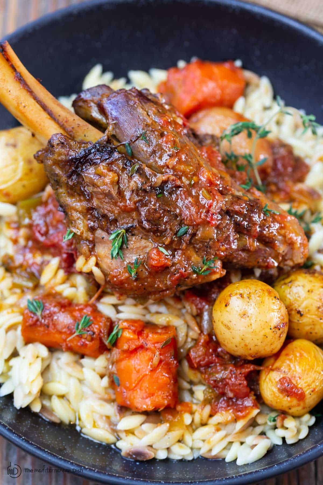

This leg of lamb recipe is simple to prepare with thin slices of garlic and rosemary. Cooking peeled potatoes in the pan around the roast is yummy. The only other things you need are gravy made from the pan drippings and a fresh vegetable.
In my opinion, lamb is already one of the best meats you can have in a dish When you include some amazing spices, it becomes irresistable! Finally, the inclusion of some potatoes and a nice, fresh vegetable truly bring this dish over the top.